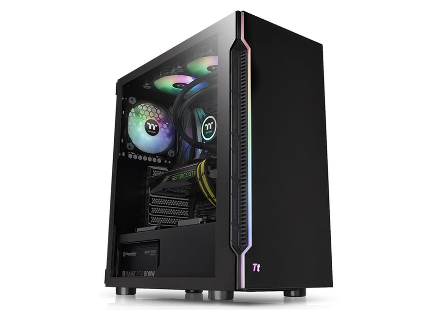

ALTA Core i5-12400F (142383)
2899 ₾

ზოგადი ინფორმაცია
ბრენდი:
ALTA
ტიპი:
დესკტოპ კომპიუტერი
ომპიუტერის მახასიათებლები
პროცესორი:
Intel Core i5-12400F (18M Cache, up to 4.40 GHz)
ბირთვების რაოდენობა:
6
ნაკადების რაოდენობა:
12
დედადაფა:
Asus Prime Z690-P
მეხსიერება (RAM):
Kingston Fury 16GB DDR4 3200MHz
SSD მოცულობა:
960 GB
ვიდეო ადაპტერი:
Asus TUF Gaming GeForce GTX 1660 Ti EVO 6GB
კვების წყარო:
600W
ოპტიკური დისკის წამკითხავი:
არა
ქულერი:
Thermaltake UX100 ARGB Lighting CPU Cooler
კორპუსი:
Thermaltake H200 TG RGB
სამუშაო სისტემა
ოპერაციული სისტემა:
სისტემის გარეშე
ფერი
ფერი:
შავი
გარანტია
გარანტია ფიზიკური პირისთვის:
24 თვე
view this pc here:Link